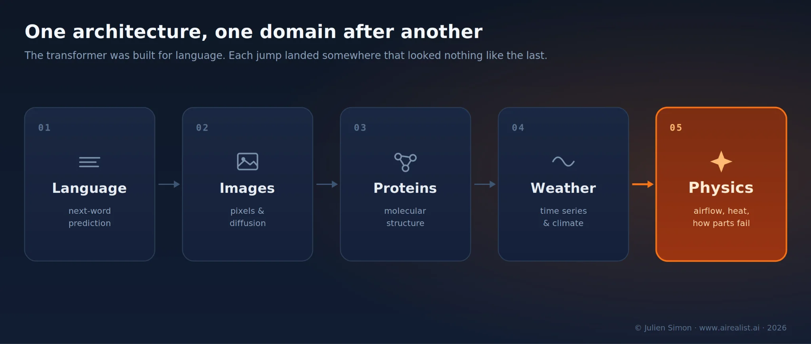
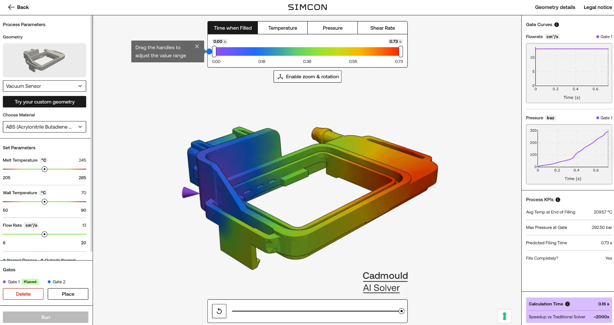
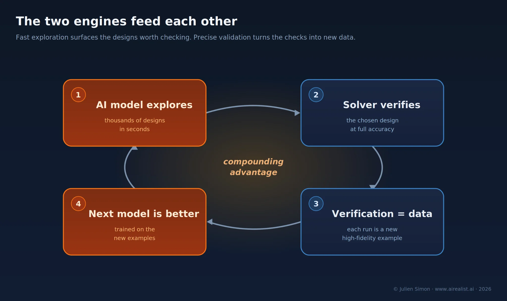

Disclosure:Simcon, used here as a worked example, is a portfolio company ofFortino Capital, where I am an AI operating partner. I’ve kept this piece to what Simcon has already made public, and thelive demois open to anyone.
The conversation about generative AI has narrowed to two things it does extremely well: write text and write code. But that is a small slice of what the underlying machine turned out to be good at.
The transformer was built for language. Then it generalized. The same architecture that predicts the next word learned to generate images, then to model protein structures, then to forecast time series and weather. Each jump landed in a domain that looked nothing like the last, and each time the lesson repeated: feed a transformer enough diverse examples of a thing, and it learns a representation of that thing general enough to handle inputs it never saw.

So here is the question that follows naturally and almost nobody is asking out loud: what happens when you point it at industrial engineering data and complex 3D physics? Not text, not pixels: the airflow over a car, the heat moving through a turbine, the way molten plastic fills a mold. The data that engineers generate daily by the terabyte, which never touches the public internet.
The part of AI that doesn’t read
Everything the frontier labs compete on is trained on the internet: text, code, images, and video. That data is effectively a global commons: everyone scrapes the same web, so no one owns the input.
The physical world is the opposite. The data that describes it lives inside the companies that build things, and it never gets posted anywhere. Decades of crash tests, wind-tunnel runs, thermal cycles, material trials, and — the unsung hero of modern engineering — simulation results. Before a car, a phone case, or a medical device gets built, engineers simulate it. Simulations are used to predict and optimize the quality and cost issues that will arise during manufacturing and how the parts will behave in the real world. The result is fewer costly defects in the real world. To predict the physics, they run numerical solvers that chew through large systems of partial differential equations, which is computationally intensive. These runs are slow, expensive, and have been the backbone of industrial design for decades.
They are also a training set. Every solver run is a labeled example: this target geometry, these conditions, this outcome. A company that has run millions of them is sitting on something no web scraper can ever reach.
The bet behind Physics AI is that you can train a model on that simulation output, the way a language model is trained on text, and get a network that has, in effect, learned the physics. Not the equations. The behavior. Feed it a shape it has never seen, and it predicts the result, in seconds, without solving anything.
The category now has a name: Large Engineering Models. The label is deliberate. It claims the same lineage as Large Language Models — the same transformer architecture underneath, the same idea that scale and diverse data produce something that generalizes — but is trained on the physical world rather than language.
Why this didn’t work before
Engineers have wanted fast simulation forever, and the idea of replacing a slow solver with a fast approximation is old. The approximations are called surrogate models, and until recently, they came with a catch that made them nearly useless for real design work.
A classical surrogate is fitted to a specific problem. Train it on one family of parts, and it interpolates nicely within that family. It also falls apart the moment you hand it a geometry it hasn't seen before. It learned the answers, not the physics. Engineers got a tool that was fast exactly where they didn’t need help and unreliable everywhere they did.
The numerical solvers had the opposite profile: accurate and trustworthy across any geometry, but far too slow to run inside a design loop. So the trade-off stood. Fast or general: pick one.
What changed is the architecture. The transformer — the same design that made language models work — turns out to be good at consuming large, diverse collections of physical examples and learning a representation that holds up on inputs it was never trained on. The published method these systems draw on, Universal Physics Transformers, was demonstrated on automotive aerodynamics in a 2025 peer-reviewed paper. [2] The detail that matters for a non-specialist is simple: it was built to generalize across shapes, not memorize a few. That is the wall the old surrogates hit, and it is the wall the new models are designed to go through.
Fastandgeneral, at the same time. That is the whole claim. Everything else is engineering.
A real-life LEM you can run in a browser
Abstractions are easy to oversell, so here is a concrete one: plastic injection molding, in a corner of manufacturing that most people never think about. It is how a staggering share of the plastic object parts around you were made: caps, casings, connectors, dashboards. A mold costs six or seven figures and takes months to design. Get the design wrong, and the plastic will not fill the cavity properly. And you will only find out after the steel is cut.
So engineers simulate the fill first. Historically, that meant a numerical solver and a wait of minutes to hours per design, which in practice limits how many variations you can reasonably try.
This is where domain expertise and data decide everything, and it isSimcon’s. The German company has developed injection-molding simulation software for over 35 years, used by manufacturing world leaders such as Bosch, Continental, Roche, and Arburg. And now they’ve built, trained, and deployed a Transformer-based model for 3D physics.
TheirCadmould AI Solveris trained on millions of simulation runs generated by their own numerical solvers — the proprietary ground truth I described earlier, accumulated over decades and turned into a training corpus no one else has. The architecture came from a research collaboration; the physics, the data, and the validation are Simcon’s, and the company now owns the model outright, trains it in-house, and runs the cloud infrastructure that hosts it for customers. [3] Simcon bills it as the first Large Engineering Model for injection molding. Results in seconds instead of hours, a speedup the company puts in the range of 200 to 1,000 times, across part shapes the model was never trained on. [4]
You don’t have to take the number on faith. Simcon put aresearch previewon the open web. It runs in a browser, on a mid-tier cloud GPU, and the geometries it ships with were explicitly not in the training data, to show it generalizes rather than parrots. [5] You change a parameter, you watch the fill pattern redraw, you change it again. The hours-long loop becomes a conversation. Anyone reading this cantry itonline, and you can alsoschedule a demowith the Simcon team.

The current model covers the filling stage of the molding process. The cooling, shrinkage, and warpage steps, which are decisive for many real-world outcomes, are on the roadmap. Accuracy is reported within a few percent of the numerical solver and improves as the training set grows. [6] The AI is a fast compass for exploration, and you can still validate the chosen design with the classical solver before cutting steel. That framing — AI to explore, trusted solver to confirm — is the sober version of the technology, and it is more convincing than a claim of replacement.
It is also more than a division of labor. The two engines feed each other. The model lets engineers explore thousands of designs in the time it would take the solver to check one; the solver then verifies the chosen design at full accuracy — and every such verification run is a fresh, high-fidelity training example for the next version of the model. Fast exploration surfaces the designs worth checking; precise validation turns the checks into new data; the new data makes the next model better at exploring. The loop closes in favor of whoever owns both engines. A company with only a fast model has a clever demo. A company with only a solver has what the industry already had. The advantage goes to the one running both, because each loop around widens the lead.

Why Europe, for once, is well positioned
The reflex in any AI story is that the US trains the biggest models and Europe writes the rules. In language, that is broadly true. Large Engineering Models invert one piece of it.
The scarce input here is not compute or web text. It is high-fidelity physical data from real industrial processes that lives disproportionately within European industry. Europe’s manufacturing sector holds potentially a century or more of accumulated knowledge and data: how materials behave, how processes fail, how a good part differs from a bad one, captured across generations of engineers and now sitting in solver archives, test logs, and process records.
A model is only as good as the data and the domain knowledge behind it, and those don’t transfer in a deal. They sit with the companies that have spent decades generating high-fidelity physical data — most of them industrial firms, many of them European, none of them frontier labs.
That is the moat. It is the one input a frontier lab cannot buy, scrape, or out-compute, and it is the thing that looks like a legacy liability in the software era right up until it becomes the training corpus for an entire category. Germany’s machine builders, the automotive supply chain, the molders and tool shops: each is a reservoir of exactly the data these models need, and the web does not contain. A simulation company with 35 years of its own solver output turning into a defensible AI asset is not a fluke. It is the shape of the whole opportunity.
This is also why the European Commission, in its Apply AI Strategy last October, named manufacturing a strategic sector and tied sectoral AI adoption to reducing Europe’s dependence on non-EU technology. [7] The advantage is not guaranteed — owning the data is not the same as building the models or the businesses on top of them, and that gap is where most of the value will be won or lost. But the raw material sits on the right side of the Atlantic, which is not something you can say about most of the AI race.
Why synthetic data isn’t enough
A common objection is that synthetic data dissolves the moat: if you can generate training data on demand, the proprietary corpora stop being scarce, and the advantage migrates back to whoever has the most compute.
However, this objection is weaker than it looks. Valuable synthetic data is not random data. It is data that captures the rare failure, the edge case, the point where the physics turns nonlinear, and a part that looked fine starts to warp during cooling. Knowing which scenarios are worth generating and whether a generated sample is physically trustworthy or quietly wrong is itself domain expertise. You cannot synthesize your way past not knowing what matters. Synthetic generation doesn’t remove the need for decades of accumulated know-how; it raises the price of admission to a layer where that know-how is even scarcer.
A model you can access in a browser is predicting the 3D physics of parts it never saw, in seconds, and a company that knows the cost of getting it wrong is putting it in front of customers — alongside, not instead of, the solver they already trust. The first models to read and write the world got the headlines. The ones learning to predict it may turn out to matter more to the people who build things, and Europe is holding more of the raw material than it has in any other part of this race.
The machines are starting to learn physics. The question worth asking is, who can you trust to teach them, and on whose data?
Notes
[2] Benedikt Alkin et al., “AB-UPT: Scaling Neural CFD Surrogates for High-Fidelity Automotive Aerodynamics Simulations via Anchored-Branched Universal Physics Transformers,” Transactions on Machine Learning Research, accepted October 2025 (arXiv:2502.09692). The published architecture targets automotive aerodynamics computational fluid dynamics; its application to injection molding is a separate, domain-specific implementation. Code released by Emmi AI onGitHub; paper onarXiv.
[3] Simcon GmbH, “SIMCON Unveils World’s First Large Engineering Model for Plastic Injection Moulding,” BusinessWire, March 18, 2026. The Cadmould AI Solver is described by Simcon as co-developed with Emmi AI on the model architecture; the training data, domain validation, and commercialization are Simcon’s per the company’s own product and scientific pages. CEO quote and product framing from the same release.BusinessWire.
[4] Speed range and “trained on over a million simulation trajectories” per Simcon’s product and technical pages; the 200–1,000× and “up to 1000×” figures are vendor-claimed and not independently reproduced. Trade-press coverage (Plastics Today, Plastics Technology, MoldMaking Technology, March 2026) repeats the “up to 1,000×” figure sourced to Simcon.Simcon.
[5] Research preview runs in-browser on a cloud GPU; Simcon states the demo geometries are not part of the training data. Live at simcon.ai.Simcon demo.
[6] Filling-stage scope, roadmap to packing/cooling/shrinkage-and-warpage, accuracy reported “within 2–5% of numerical methods,” and the explicit “explore with AI, validate with classical solver” workflow are all per Simcon’s public materials and CEO statements. Accuracy figures are vendor-claimed.Simcon scientific page.
[7] European Commission, “Apply AI Strategy,” COM(2025) 723, published 8 October 2025. The strategy names manufacturing among its strategic sectoral flagships (deploying “agentic” AI to optimise production lines, targeted Q4 2026) and frames sectoral AI adoption as part of strengthening European digital sovereignty and reducing dependence on non-EU technology providers.EUR-Lex.